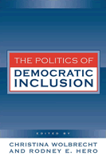

<body bgcolor="#FFFFFF" text="#000000" link="#0000FF" vlink="#CC0000" alink="#CC0000"><center><hr width="350" size="1" align="center" noshade>How institutions foster and hinder political participation of the underrepresented<hr width="350" size="1" align="center" noshade><p><a href="https://cdcshoppingcart.uchicago.edu/Cart/ChicagoBook.aspx?ISBN=9781592133581&&PRESS=temple" target="_top">Buy this book!</a> | <a href="https://cdcshoppingcart.uchicago.edu/Cart/Cart.aspx?PRESS=temple" target="_top">View Cart</a> | <a href="https://cdcshoppingcart.uchicago.edu/Cart/Cart.aspx?PRESS=temple" target="_top">Check Out</a></p><p></p></center><!--none//--><h1>The Politics of Democratic Inclusion</h1>
<H2><!-- With Peri E. Arnold and Alvin B. Tillery --></H2>
<h3>edited by Christina Wolbrecht and Rodney E. Hero with Peri E. Arnold Alvin B. Tillery </h3>
<P>cloth 1-59213-358-4 $80.50, Apr 05, <FONT COLOR=#990033>Available</FONT>
<br>paper 1-59213-359-2 $31.95, Apr 05, <FONT COLOR=#990033>Available</FONT>
<br>Electronic Book 1-59213-360-6 $31.95 <FONT COLOR=#990033>Available</FONT>
<BR> 352 pp
6x9
12&nbsp;tables 2&nbsp;figures
</P><BLOCKQUOTE><I>"This sterling collection perceptively achieves its two central goals. It crisply summarizes what we know and need to learn about key facets of political participation. Its excellent essays also thoughtfully discuss the implications of the uneven inclusion they document in American political life."</i>
<br>&#151<b>Ira Katznelson</b>, Ruggles Professor of Political Science and History at Columbia University and author of <i>When Affirmative Action Was White</i><i></I></BLOCKQUOTE>
<p>The issue of political participation has been central to American politics since the founding of the United States. <i>The Politics of Democratic Inclusion</i> addresses the ways traditionally underrepresented groups have and have not achieved political incorporation, representation, and influence&#151or "democratic inclusion"&#151in American politics. Each chapter provides a "state of the discipline" essay that addresses the politics of diversity from a range of perspectives and in a variety of institutional arenas.
<p>Taken together, the essays in <i>The Politics of Democratic Inclusion</i> evaluate and advance our understanding of the ways in which the structure, processes, rules, and context of the American political order encourage, mediate, and hamper the representation and incorporation of traditionally disadvantaged groups.
<BR>&nbsp;<h2>Excerpt</h2><P>Excerpt available at <a href="http://www.temple.edu/tempress">www.temple.edu/tempress</a></p>
<BR>&nbsp;<h2>Reviews</h2>
<p><i>"</i>The Politics of Democratic Inclusion<i> seeks to highlight the myriad ways that political institutions foster or inhibit the inclusion of historically under-represented groups into contemporary American politics. Leading scholars not only spell-out the dilemmas that confront racial, ethnic and immigrant groups and women in the United States as they seek to influence politics, but also the roles that such institutions as political parties, local governments, the federal courts, the Congress and the presidency play in mediating, constraining and facilitating their access to power. Taken together, these essays should push students of democratic inclusion to look beyond the study of attitudes, beliefs and mass politics and closely examine how it is that institutions also matter in explaining the success and failure of disadvantaged groups as they seek a redress of their political and policy grievances. The result is a first-class and even path-breaking work of collaborative scholarship."</i>
<br>&#151<b>Lawrence C. Dodd</b>, Manning J. Dauer Eminent Scholar in Political Science, the University of Florida
<p><i>�The best edited volumes are oriented around a compelling theme, address that core from diverse perspectives, and feature a collection of expert authors working at a high scholarly pitch. </i>The Politics of Democratic Inclusion<i> is one such book�.Public officials in search of illumination would do well to pick up </i>The Politics of Democratic Inclusion<i>, both for a deeper understanding of the issues involved and a set of searching policy discussions.�</i><br>&#151<b>�Perspectives on Politics�</b>
<BR>&nbsp;<h2>Contents</h2><P>
<p>1. Introduction &#150 Rodney E. Hero and Christina Wolbrecht
<p><b>Part I. Diversity Within and Across Groups</b>
<br>Introduction &#150 Alvin B. Tillery
<br>2. From Nominal to Ordinal: Reconceiving Racial and Ethnic Hierarchy in the United States &#150 Jennifer L. Hochschild
<br>3. Reviving Group Consciousness &#150 Dennis Chong and Reuel Rogers
<br>4. Bringing Outsiders In: Questions of Immigrant Incorporation &#150 Michael Jones-Correa
<p><b>Part II. Mediating Institutions</b>
<br>Introduction &#150 Christina Wolbrecht
<br>5. Social Movements as Mechanisms for Political Inclusion &#150 Anne N. Costain
<br>6. Race, Parties, and Democratic Inclusion &#150 Paul Frymer
<br>7. Race, Ethnicity, and Electoral Mobilization: Where's the Party? &#150 Jan E. Leighley
<br>8. Political Parties, Minorities, and Elected Office: Comparing Opportunities for Inclusion in the United States and Britain &#150 Miki Caul Kittilson and Katherine Tate
<br>9. Political Institutions and Incorporation of Immigrants &#150 Kristi Andersen and Elizabeth F. Cohen
<p><b>Part III. Governing Institutions</b>
<br>Introduction &#150 Peri E. Arnold and Rodney E. Hero
<br>10. Splintering Citizenship and the Prospects for Democratic Inclusion &#150 Susan E. Clarke
<br>11. School Boards and the Politics of Education Policy: Downstream Consequences of Structure &#150 Kenneth J. Meier
<br>12. A Tangled Legacy: Federal Courts and Struggles for Democratic Inclusion &#150 George Lovell and Michael McCann
<br>13. The Representation of Racial Interests in the U.S. Congress &#150 David T. Canon
<br>14. The American Presidency and the Politics of Democratic Inclusion &#150 Patricia Conley
<p>About the Contributors
<br>Index
</P><BR>&nbsp;<H2>About the Author(s)</H2>
<P>Christina Wolbrecht is Packey J. Dee Associate Professor in the Department of Political Science at Notre Dame. Her book, <i>The Politics of Women's Rights: Parties, Positions, and Change</i>, received the 2001 Leon D. Epstein Outstanding Book Award from the Political Organizations and Parties Section of the American Political Science Association.</P>
<P>Rodney E. Hero is Packey J. Dee Professor of American Democracy in the Department of Political Science at Notre Dame, where he also serves as chair of the department. His book, <i>Latinos and the U.S. Political System: Two-Tiered Pluralism</i> (Temple, 1992), received the American Political Science Association's Ralph J. Bunche Award. He also authored <i>Faces of Inequality: Social Diversity in American Politics</i> (1998).</P>
<P>Contributors: Kristi Andersen, Syracuse University; Peri E. Arnold, University of Notre Dame; David T. Canon, University of Wisconsin, Madison; Dennis Chong, Northwestern University; Susan E. Clarke, University of Colorado, Boulder; Patricia Conley, University of Chicago; Elizabeth F. Cohen, Syracuse University; Anne N. Costain, University of Colorado, Boulder; Paul Frymer, University of California, San Diego; Jennifer L. Hochschild, Harvard University; Michael Jones-Correa, Cornell University; Miki Caul Kittilson, University of Texas, San Antonio; Jan Leighley, Texas A&M University; George Lovell, University of Washington; Michael McCann, University of Washington; Kenneth J. Meier, Texas A&M University; Reuel Rogers, Northwestern University; Katherine Tate, University of California, Irvine; Alvin B. Tillery, University of Notre Dame, and the editors.</P>
<BR><H2>Subject Categories</H2>
<p><A HREF="/tempress/political.html" TARGET="_top">Political Science and Public Policy</a>
<BR><A HREF="/tempress/race.html" TARGET="_top">Race and Ethnicity</a>
</p>
<p align="center"><a href="https://cdcshoppingcart.uchicago.edu/Cart/ChicagoBook.aspx?ISBN=9781592133581&&PRESS=temple" target="_top">Buy this book!</a> | <a href="https://cdcshoppingcart.uchicago.edu/Cart/Cart.aspx?PRESS=temple" target="_top">View Cart</a> | <a href="https://cdcshoppingcart.uchicago.edu/Cart/Cart.aspx?PRESS=temple" target="_top">Check Out</a></p><p><font face="Arial" size="1"><a href="copyright.html" onMouseOver="window.status='Web Copyright Policy';return true;" onMouseOut="window.status=''" title="Web Copyright Policy">&copy;</a> 2015 <a href="http://www.temple.edu" target="new" onMouseOver="window.status='Link to Temple University home page';return true;" onMouseOut="window.status=''" title="Link to Temple University home page">Temple University</a>. All Rights Reserved. http://www.temple.edu/tempress/titles/1765_reg.html</font></p>